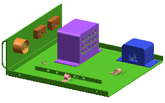

In this exercise you will:
Open a top level assembly that contains various electrical devices and their supporting parts.
Add an empty component to this assembly that will become the wiring harness assembly.
WAVE link all the ports in the assembly into your wiring harness assembly to maintain connectivity to each electrical device in the assembly.

Launch the Create a wiring harness subassembly activity.
For additional information, see the following:
Use the Command Finder to search for Create New Component.